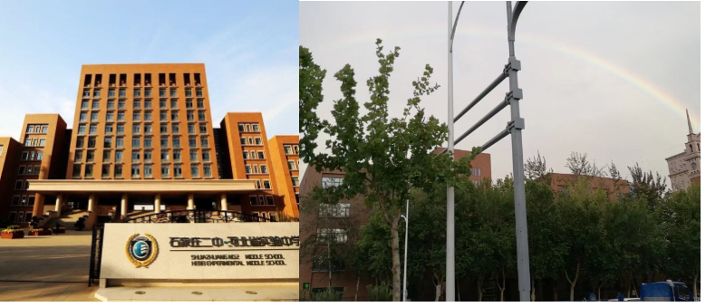
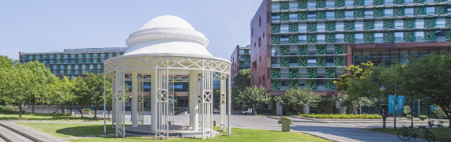

Thanks to - NO.2 Middle School of Shijiazhuang. I met many charismatic teachers here. Not only have my high school instilled in me the idea of active learning, but also provided a very comfortable learning environment. I really like the philosophy of my high school:
坚毅勤奋诚朴健美 Perseverance Diligence Integrity Fitness

Thanks to - Xi’an Jiaotong-Liverpool University, I am trying to follow this philosophy with our university students under the guidance of kind and sophisticated teachers:
To be lifelong learners and global citizens.

Learning has another significance for me: demonstrating meaning to teachers who have taught me—-teachers will be more motivated to instruct more students if students they have taught make more progress because of them. This positive circle will lead to a more beautiful world because of higher-quality education. Education is a great thing relevant to everyone. This always plays a great role in adding more motivation even enthusiasm to my learning journey. I feel so lucky to learn from a lot of good and kind teachers from my childhood to now and I believe to my future. So thanks so much to my dear parents who always support my dream.
Statistics is a beneficial and interesting subject and I feel so lucky to major in BioStatistics.